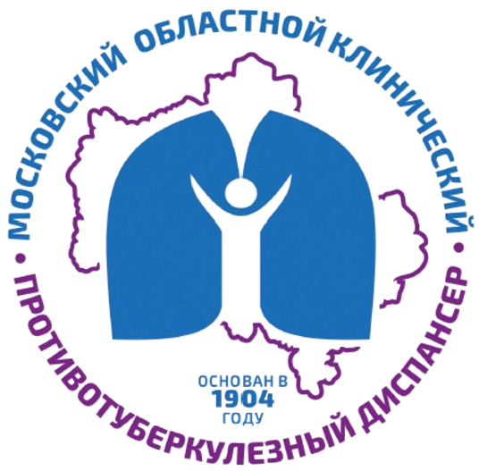

ГБУЗ МО МОКПТД
Навигатор врача-фтизиатра
Система доступа к профессиональным ресурсам (для противотуберкулезных кабинетов)
Объявления
Стандартизация во фтизиатрии
Клинические рекомендации
Официальные КР на сайте Минздрава РФ
Все клинические рекомендации (рубрикатор)
Туберкулез у взрослых
Туберкулез у детей
Материалы Российского общества фтизиатров (РОФ)
Версии клинических рекомендаций на сайте РОФ
Документы Московской области
Иммунодиагностика у детей и подростков (МОКПТД, 2025)
Нормативно-правовая база
Приказы МОКПТД
Нормативы, регламентирующие работу противотуберкулезной службы
Федеральные и региональные нормативные документы
Гид по работе врача-фтизиатра
Бланки
Контрольные листы
Справочник
Мониторинг, анализ и безопасность
Рабочие системы
Интеграция с общей лечебной сетью
Информация для пациентов
Общая информация о туберкулезе
Как правильно принимать лекарства
Почему важно правильно собирать мокроту
Почему нельзя пропускать прием лекарств
Информация об обследовании на туберкулёз в производственном очаге
О профосмотрах на туберкулёз
О хирургическом лечении
Материалы для информирования пациентов
Ответы на часто задаваемые вопросы
Дополнительные ресурсы
Образовательные ресурсы
Российское общество фтизиатров
Вебинары ФГБУ «НМИЦ ФПИ»
Национальный центр фтизиопульмонологии
Туберкулез и болезни легких
Международные ресурсы